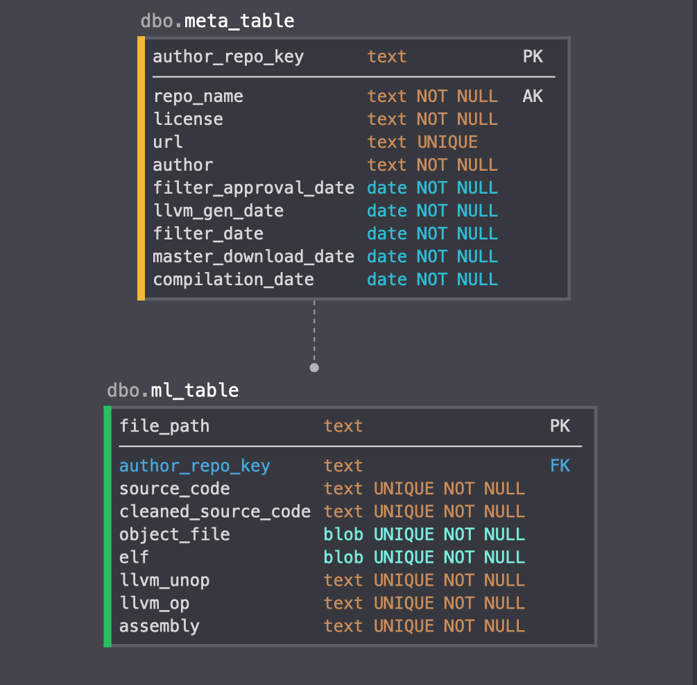

Designing the Database¶
This is a log of major design decisions and reasoning made during creation of the database section of decompy. At the time of writing this, this is made up of one class based off of a design diagram, the RepoFiltering class, and the RepoStructure class.

{kind=link}
- Diagram
- The diagram shows that the “alldata” table is the overall collection and shall not be used. It only serves as visual representation of the data we collect from each repo. The tables to use with the sqlite database include “meta” and “ml”. The meta data is all of the data that the ML agent will not use, but needs a reference to. In this case, it is the repo name, license, url, author, and dates. The ML agent table then uses this as a primary key and foreign key. The ML table then stores the file_path as a primary key, and because the repo name must be unique, we are storing unique pairs of repo name and file path for each file. The C source code as text, the object file, as a blob to store as is, the llvm unoptimized and optimized as text as well. This table represents what the ML agent will be using for training and testing against for an accurate model.
- Python Sqlite3
- The team has decided to use a sqlite database as per our sponsor’s agreement. This means that the ML agent and database will have to be on the same system. This is useful because sqlite can be easily transferred and only needs to be written to once and not require consistent write queries.